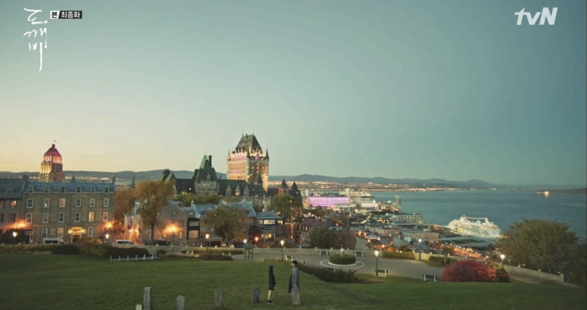

1. 퀘벡에 대해 알아보자
캐나다 퀘벡은 캐나다에서 가장 큰 주이다. 우리나라 사람들에겐 드라마 '도깨비'의 촬영장소로 잘 알려진 곳이다. 많은 인종이 살고 있어 많은 언어들을 사용하는.. 번역기가 없어서는 안되는 여행지이다. 북미 유일의 성곽도시라는 특별한 점과 올드 타운 전체를 유네스코에서 문화유산으로 선정했다는 점이 우리의 관심을 끈다. 드라마 도깨비에서 본 풍경을 현실로 보러 떠나보자.
2. 퀘벡의 교통과 기후
퀘벡은 매우 넓은 지역이지만 다행이도 관광지가 거의 한 곳에 몰려 있어서 걸어서도 충분히 이동할 수 있다. 특별히 멀리 떨어진 곳을 갈때는 우버를 이용하거나 버스를 타는 것도 방법이다. 퀘벡은 지역이 넓은 만큼 기후도 다양하다. 여름에는 나름 온난하여 20도정도를 유지하지만 겨울에는 급격히 추워져 영하 20도를 오르내린다. 가을에 방문하면 단풍이 유명해 아름다운 풍경을 볼 수 있다.
3. 퀘벡 여행 방문지
1. 페어몬드 샤토 프롱트낙 호텔
이 호텔은 퀘벡의 랜드마크로도 알려진 호텔이다. 드라마 도깨비 촬영지로도 유명한 이 호텔은 푸른 청동 지붕과 붉은 벽돌의 조화가 아름답다. 완공 200년이 넘은 이 호텔은 오랜 세월이 건물에 고스란히 담겨 그 아름다움과 우아함을 뽐낸다. 퀘벡 여행을 시작할때 아름다운 곳에서 쉬면서 시작하면 어떨까 ?
2. 퀘벡 윈터 카니발
이 축제는 세계적으로 유명한 축제이다. 축제 기간 도심에는 대형 슬라이드와 얼음으로 만들어진 본옴의 겨울 궁전이 세워지고 퍼레이드, 눈 목욕, 아이스하키, 아이스 카누 레이싱 등 볼거리도 많아진다. 이 지역의 문화적 기둥이자 관광의 원동력으로 여겨지는 이 축제는 올해 70주년을 맞이한다. 웅크리게 되기 쉬운 겨울을 즐기는 법을 캐나다 퀘벡에서 배워보는 것은 어떨까 ?
3. 플레이스 로얄

이곳은 퀘벡에서 가장 유서 깊은 공원이다. 광장을 중심으로 아트 갤러리와 부티크, 레스토랑, 카페가 있어 거리를 걸어다니기 심심하지 않고 좁은 골목과 돌로 된 아기자기한 건물들은 절로 감탄을 자아낸다. 퀘벡을 여행한다면 놓쳐서는 안되는 5층 높이의 건물에 그려진 벽화도 여기서 감상할 수 있다. 영화 '캐치 미 이프 유 캔'의 촬영지로도 사용된 플레이스 로얄을 방문해보자.
4. 퀘벡 먹거리
1. 파브오라드
지방이 많은 콩이라는 의미를 가지는 파브오라드는 메이플 시럽을 곁들여 구운 콩이다. 이 요리는 캐나다를 개척하던 사냥꾼들이 아침 식사로 먹었던 음식으로 전통이 깊은 음식이다. 콩만 먹는 것이 아니라 계란, 빵, 햄이나 소시지와 함께 먹는다. 부드러운 식감에 달달한 맛이 나 콩을 싫어하는 사람들도 쉽게 접할 수 있다고 한다.
2. 푸틴
퀘벡의 국민 간식으로 불리는 요리다. 그레이비 소스와 감자튀김, 치즈 덩어리를 사용해 만든 요리이다. 소시지나 풀드포크 등 토핑도 다양해 취향에 맞게 먹을 수 있고 퀘벡 주의 푸틴은 퀘벡의 탄력있는 치즈를 사용하기 때문에 은근한 자부심을 느끼는 요리이다. (이 음식의 칼로리는 상상을 초월하는 수준 ..!)
3. 타르트 오 수크르

글자 그대로 번역하면 "설탕파이"라는 뜻을 가진 이 음식은 달콤함의 절정이다.파이 크러스트, 설탕, 버터, 밀가루, 바닐라가 들어간 파이다. 다른 나라에서도 다양한 종류의 설탕 파이가 있지만 퀘벡에서는 이 파이가 인기가 많아 식당, 식료품점 어느 곳을 가도 이 파이가 없는 경우는 없다고 한다. 여행하면서 당 충전에 제격인 음식이다 !